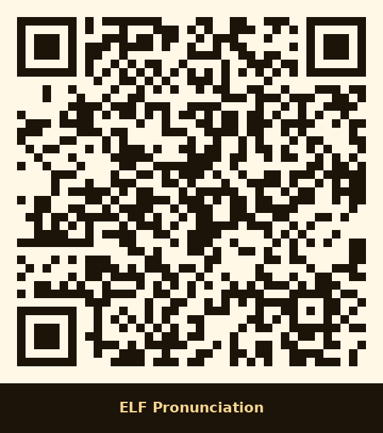
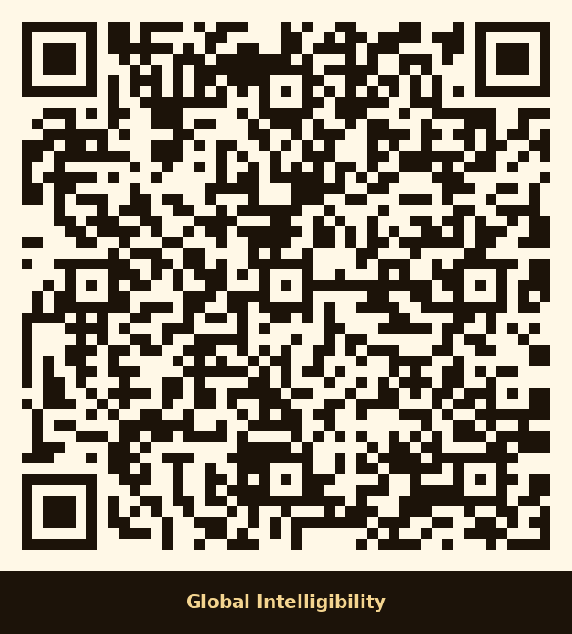
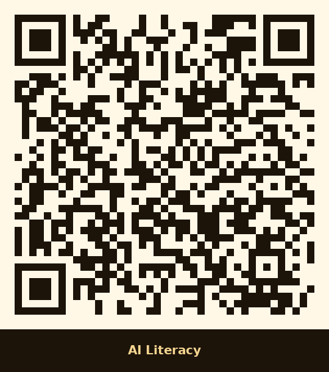
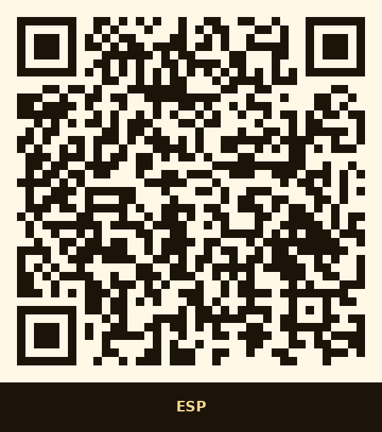
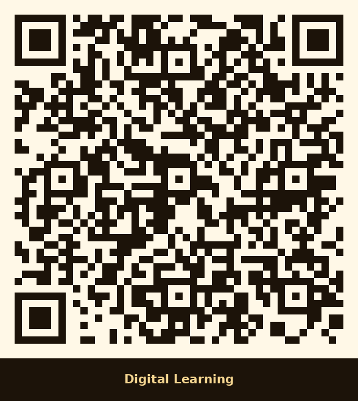
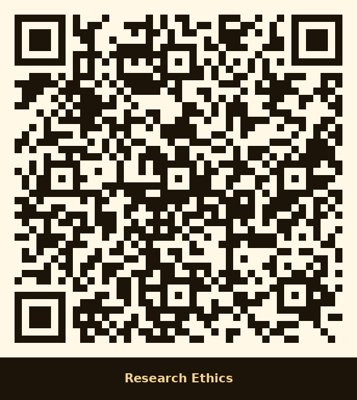
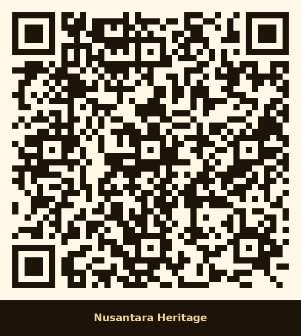

Nusantara Base
Layered island contours, maritime lines, and black stone surfaces symbolize Indonesia’s archipelagic knowledge routes and cultural plurality.
Interactive Scholarly Monument
A monumental digital–physical artwork that transforms Garuda and Nusantara identity into an interactive learning ecosystem for language education, intelligibility, AI literacy, ESP, digital pedagogy, research ethics, and cultural heritage.

Design Philosophy
The monument is designed as a readable academic landscape. The Nusantara base represents plural identity; the open manuscript represents research and publication; the Garuda represents dignity and intellectual guardianship; the luminous orb represents global intelligibility; and the wing-feathers become eight QR-connected learning fields.
Garuda–Nusantara Visual Grammar
Each visual element is connected to a learning purpose so that the artwork functions as public art, scholarly identity, and an educational interface.
Layered island contours, maritime lines, and black stone surfaces symbolize Indonesia’s archipelagic knowledge routes and cultural plurality.
Rising pages represent academic writing, peer review, publication, curriculum work, and knowledge creation across disciplines.
The Garuda is shaped as a scholarly guardian: firm, dignified, ethical, and visionary, carrying Indonesia’s intellectual contribution outward.
The luminous globe represents intelligibility, international collaboration, and the movement of Indonesian scholarship into global conversation.
Eight feather zones operate as QR-connected knowledge gates, each leading to a focused learning module and visitor activity.
Circuit traces, sound waves, and constellation paths connect language, AI, AR, digital learning, and ethical research practice.
Interactive Monument Viewer
Every hotspot is connected to one scholarly field. Visitors can scan the QR code from the monument, a printed plaque, or this digital twin.
Integrated Learning Fields
Each pathway is written as usable public-learning content, not a blank label. The same data powers the viewer, QR Station, and field cards.
Connects the open manuscript and pedagogical feathers to curriculum design, classroom interaction, assessment literacy, reflective teaching, and research-informed language pedagogy.
Positions Indonesian English voices as legitimate participants in international communication, emphasizing intelligibility, accent diversity, and communicative success rather than native-like imitation.
Uses the luminous orb as a symbol of clear, ethical, and inclusive global communication across languages, cultures, disciplines, and academic communities.
Connects digital circuitry in the Garuda wings to responsible AI use in education, including prompting, evaluation, academic integrity, bias awareness, and human judgment.
Links manuscript routes and discipline symbols to professional communication, needs analysis, specialist vocabulary, genre awareness, and practical English for academic and occupational contexts.
Transforms the monument into a digital twin through QR learning, AR interpretation, 360-degree viewing, mobile access, and blended learning pathways for visitors and students.
Places integrity at the base of the monument, showing that research impact must stand on consent, responsibility, transparency, data care, authorship honesty, and social benefit.
Grounds the entire monument in archipelagic identity, multilingual life, oral tradition, batik-inspired geometry, maritime connection, and Indonesia’s contribution to global knowledge.
Voice Map of Nusantara
This section supports future audio upload. It already provides field-based scripts so each QR pathway can be used for speaking, recording, reflection, or classroom demonstration.
“Teaching language means designing meaningful opportunities for learners to speak, think, interact, and grow.”
“My accent carries my identity, and my goal is to be clear, respectful, and intelligible.”
“Communication becomes global when meaning can travel across cultures without erasing local voice.”
“Artificial intelligence can support learning when human judgment, ethics, and responsibility remain central.”
“Specific purposes require specific language, specific genres, and specific awareness of audience and task.”
“Digital learning should connect access, interaction, feedback, reflection, and meaningful participation.”
“Good research protects participants, respects evidence, and contributes responsibly to society.”
“Nusantara teaches that diversity is not a barrier to knowledge, but the source of deeper understanding.”
QR Learning Station
Use these QR codes on plaques, printed guides, exhibitions, classroom materials, or the physical monument. Each code opens the exact learning field inside the digital monument.
Pedagogy, curriculum, assessment, feedback, reflective teaching.
Open field
Accent diversity, pronunciation, speaking, intelligibility.
Open field
Clarity, audience awareness, inclusive communication.
Open field
Responsible AI, prompting, bias awareness, integrity.
Open field
Needs analysis, professional language, genre, terminology.
Open field
AR, QR, 360 digital twin, LMS, blended learning.
Open field
Consent, data care, authorship, transparency, social benefit.
Open field
Archipelago, multilingual culture, local wisdom, identity.
Open fieldScholarly Dossier
Garuda Lingua Nusantara is positioned as a scholarly signature monument: it represents the intellectual journey of an Indonesian language-education scholar whose work connects English Language Teaching, linguistics, pronunciation assessment, ESP, AI-supported learning, digital pedagogy, Research and Development, and research ethics.
The monument is designed to communicate internationally because its themes are not limited to local symbolism. Garuda and Nusantara become visual entry points into global questions: whose voices count, how intelligibility should be assessed, how AI can support learning responsibly, how English serves disciplinary purposes, and how research ethics protects human dignity.
“From Nusantara voice to global intelligibility, the monument turns scholarship into a public learning experience.”
Visual Design Board
The visual board can be used for proposal presentation, exhibition introduction, academic portfolio, design consultation, and public communication.